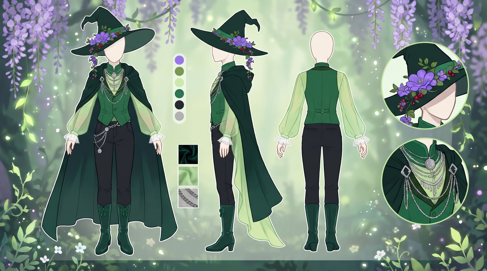
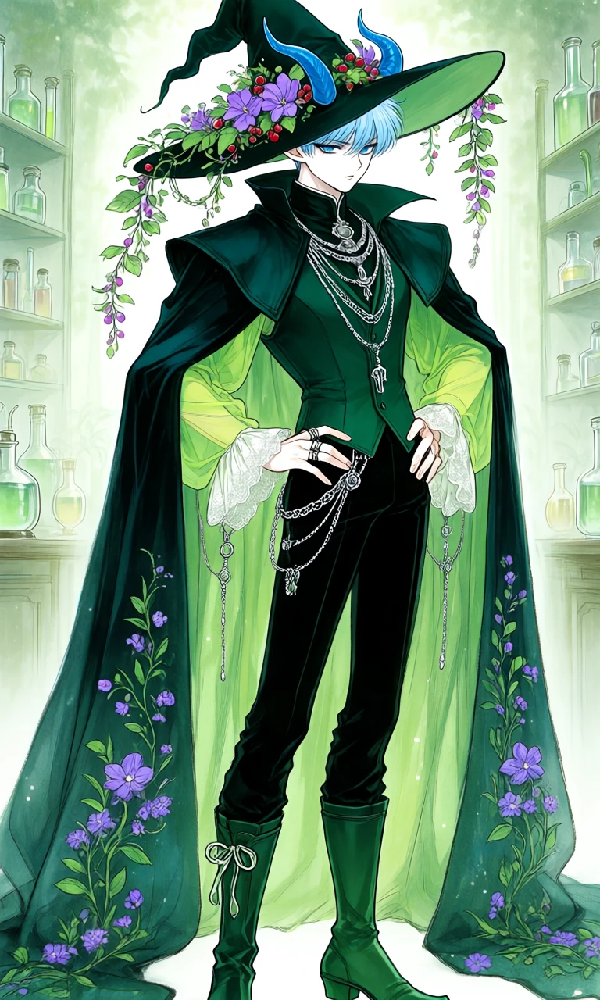
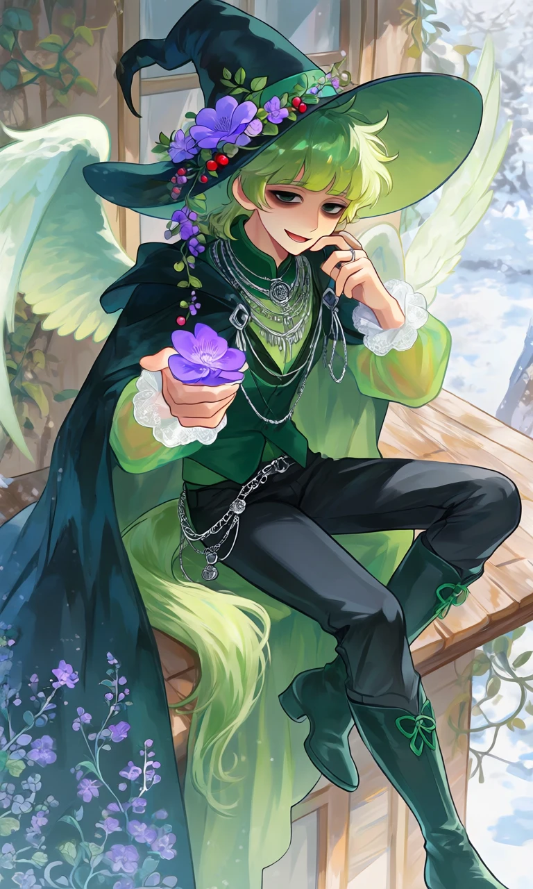

Wisteria Wayfarer

Outfit Prompt
He is wearing A large, classic pointed witch hat in dark green-black. The brim is wide and the crown is tall and slightly floppy.
The hat is heavily decorated with trailing vines, purple flowers, small berries, and green leaves that cascade down one side.
A dramatic, floor-length cape or open coat in deep dark green-to-black gradient. It has a high collar, structured shoulders, and a very long, flowing train that pools behind the man.
The cape features embroidered floral motifs (vines, leaves, small blooms) in lighter purple and green tones, especially near the hem and edges.
Underneath is a fitted dark green vest with a high neckline and a decorative silver or metallic pendant at the throat.
Long, sheer lime-dark green sleeves with under-layers with white, ruffled/lace cuffs that peek out at the wrists.
Multiple layered necklaces and hanging silver chains/pendants drape across the chest.
A fitted black pants that creates a sharp contrast with the flowing outer layers.
A silver chain/decorative belt hangs loosely at the waist/hips, with a small pendant or charm.
Slim black pants that taper into the boots.
Pointed, heeled dark green boots with a slight platform feel. They have a decorative bow/ribbon detail near the ankle/toe area and match the overall green theme.
The long cape and sheer under-layers trail behind, giving a sense of movement and volume.
Rings on the fingers, delicate chains, and floral accents throughout reinforce the “botanical mage” theme.
Outfit Examples



